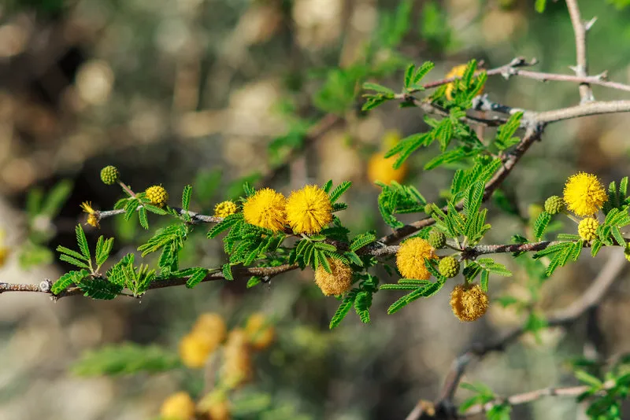
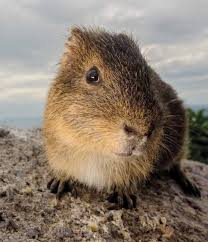

O que é o Pampa
Também conhecido como Campos do Sul ou Campos Sulinos, o Bioma Pampa ocupa uma área de 176,5 mil Km² (cerca de 2% do território nacional) e é constituído principalmente por vegetação campestre (gramíneas, herbáceas e algumas árvores). No Brasil, o Pampa está restrito ao estado do Rio Grande do Sul, ocupando 63% do território gaúcho e também porções dos territórios da Argentina e Uruguai. Os Campos da Região Sul do Brasil são denominados como “pampa”, termo de origem indígena para “região plana”. Outros tipos conhecidos como campos do alto da serra são encontrados em áreas de transição com o domínio de araucárias. Em outras áreas encontram-se, ainda, campos de fisionomia semelhantes à savana. Os campos, em geral, parecem ser formações edáficas (do próprio solo) e não climáticas. A pressão do pastoreio e os incêndios não permitem o estabelecimento da vegetação arbustiva, como se verifica em vários trechos da área de distribuição dos Campos do Sul.
vegetação
O Pampa está restrito ao estado do Rio Grande do Sul, onde ocupa uma área de 176.496 km² (IBGE, 2004). Isto corresponde a 63% do território estadual e a 2,07% do território brasileiro. As paisagens naturais do Pampa são variadas, de serras a planícies, de morros rupestres a coxilhas. O bioma exibe um imenso patrimônio cultural associado à biodiversidade. As paisagens naturais do Pampa se caracterizam pelo predomínio dos campos nativos, mas há também a presença de matas ciliares, matas de encosta, matas de pau-ferro, formações arbustivas, butiazais, banhados, afloramentos rochosos, etc. Por ser um conjunto de ecossistemas muito antigos, o Pampa apresenta flora e fauna próprias e grande biodiversidade, ainda não completamente descrita pela ciência. Estimativas indicam valores em torno de 3000 espécies de plantas, com notável diversidade de gramíneas, são mais de 450 espécies
Fauna
aves
fauna é expressiva, com quase 500 espécies de aves, dentre elas algumas são:
Ema
.jpg)
A ema é uma ave corredora que ocorre em paisagens abertas da América do Sul, do Brasil até o sul da Argentina. Vive em campos naturais, cerrados e áreas de uso agropecuário (emAve campestre corredora, vive em campos, pampas, plantações, cerrados, savanas de cupins e varjões com buritirana no sudeste do Pará. No Rio Grande do Sul aparece próximo da orla marítima nos campos litorâneos. Desaparece em locais em que a população humana é mais densa. Ela não voa, e usa suas grandes asas para equilibrar-se e mudar de direção ao correr. Quando faz muito calor, passa o dia dormindo e sai à noite para alimentar-se. Bebe pouca água. Quando algo muito próximo a assusta, abaixa o pescoço e afasta-se de repente num ziguezague ligeiro, erguendo as asas e inflando a plumagem. São aves terrícolas por excelência e quando perseguida foge a grande velocidade dando passos de um metro e meio, podendo atingir mais de 60 km. por hora
João-de-barro

Mede 18 a 20 centímetros de comprimento e pesa 49 gramas. Possui o dorso inteiramente marrom avermelhado (por isso o epíteto específico rufus). Apresenta uma suave sobrancelha, formada por penas mais claras, em leve contraste com o restante da plumagem da cabeça. Rêmiges primárias (penas de voo, nas asas) anegradas, visíveis em voo, com as asas abertas. Ventralmente é de coloração clara (alguns indivíduos podem possuir o peito, flancos e barriga amarronzados, semelhante ao dorso), sendo o queixo e pescoço brancos. Excetua-se a cauda, que é avermelhada tanto dorsal quanto ventralmente. É uma das aves de mais fácil observação nos locais onde ocorre, pois além de não se afastar muito de seu território não é nem um pouco arisca, deixando o observador chegar a poucos metros de distância. Quando não está empoleirada desce ao solo, onde passa boa parte de seu tempo caminhando de modo bem típico, alternando pequenas corridas com intervalos nos quais anda mais devagar.
Mamiferos
Também à mais de 100 espécies de mamiferos vivendo no pampa,dentre elas algumas são:
Preá
O preá tem porte pequeno, mede aproximadamente 25 cm de comprimento. Apesar de pequeno, pode chegar a pesar até 1 kg, o que deixa sua constituição bem robusta. Tem o corpo coberto por uma pelagem que pode variar sua cor de acinzentada ou castanho-escuro, o que facilita sua camuflagem no meio onde vive, orelhas e patas curtas, dentes pontiagudos, afiados e brancos. Possuem orelhas curtas e olhos grandes e escuros. É uma espécie terrestre, mas para fugir de seus predadores, tais como cobras, aves de rapina, felinos selvagens ou até mesmo cães domésticos quando atacam propriedades rurais, usam sua agilidade tanto na terra como na água, onde nadam e mergulham com destreza.
Veados-Campeiros

do Brasil, da Bolívia, do Paraguai, do Uruguai e da Argentina. Atualmente, suas populações encontram-se restritas a porções de sua distribuição original e estão reduzidas e isoladas geograficamente. Alguns autores citam uma diminuição de 98% na sua área de distribuição. Sua capacidade de deslocamento diário é baixa e sua maior atividade ocorre à noite. Durante o dia, é possível observá-lo em locais onde não é perseguido ou perturbado. Quando percebe algo perigoso, fica com a cabeça erguida, orelhas em pé e imóvel, pronto para disparar em grande velocidade. Ameaçado pelo avanço do desmatamento, caça e doenças transmitidas por animais de criação humana, sua sobrevivência depende da criação de unidades de conservação, públicas ou privadas, mais estudos científicos, programas de ecoturismo e/ou turismo rural em propriedades privadas onde a espécie ocorre, combate à presença de animais domésticos dentro de unidades de conservação, coibição da caça, entre outras ações.
Curiosidades
Existe uma grande disponibilidade hídrica na região por onde o Pampa se estende, o que se deve à presença de uma densa rede de drenagem, diversos lagos e reservas subterrâneas de água. As águas compreendidas no bioma fazem parte de duas importantes bacias hidrográficas: a bacia do Uruguai e a bacia do Atlântico Sul. Entre os principais cursos d’água que banham o Pampa, estão os rios Uruguai — que recebe o nome de rio da Prata quando encontra com o rio Paraguai na região de sua foz —, Ibicuí, Santa Maria, Jacaí e Vacuí. Além disso, uma grande extensão do aquífero Guarani está localizada no subsolo das áreas caracterizadas por esse bioma.
Resumo
Pampa é um bioma localizado no extremo Sul do país. Ele se caracteriza por apresentar um relevo pouco acidentado, e sua vegetação é composta por plantas herbáceas, arbustos e árvores de pequeno porte, como o capim-forquilha, o trevo-nativo e o algarrobo. Dentre os animais que podem ser encontrados nesse bioma, podemos citar os veados, capivaras e pequenos roedores, como o tuco-tuco, uma espécie endêmica. O clima é quente no verão e apresenta um inverno rigoroso. O Pampa, embora possua grande biodiversidade e diversos serviços ecossistêmicos importantes, tem sido bastante afetado pela ação humana, principalmente para a utilização das terras para a agricultura e pecuária.